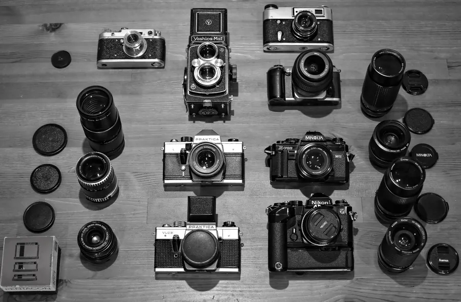
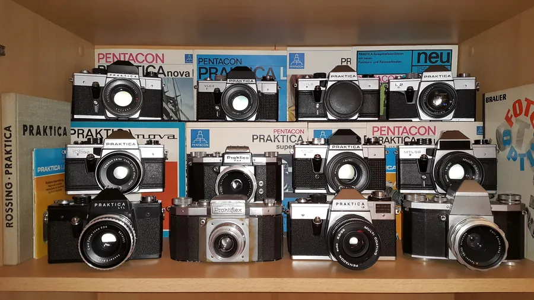
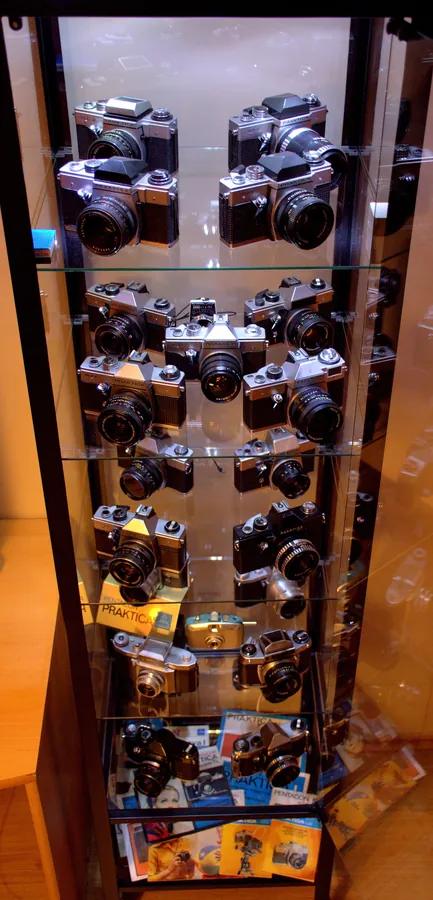
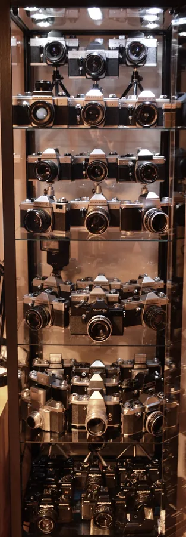
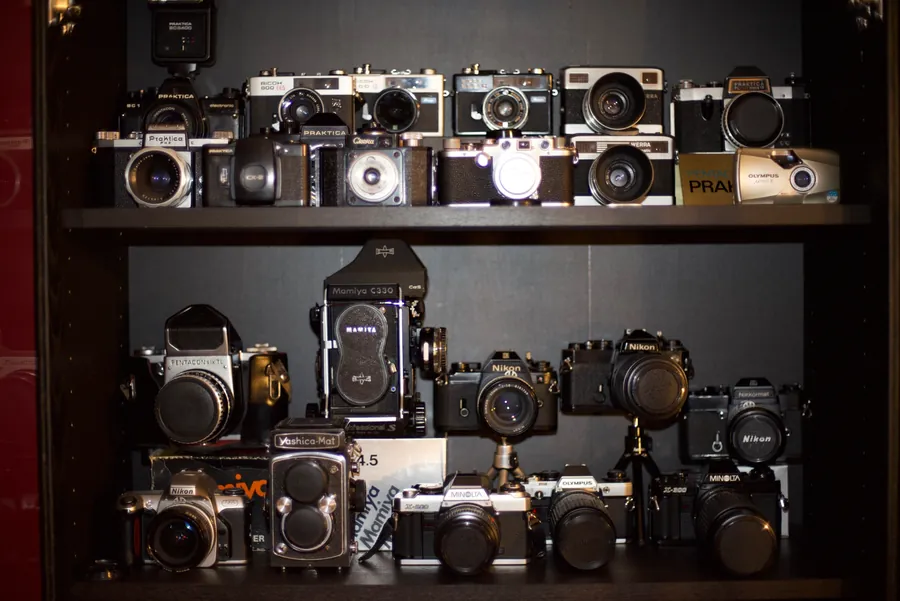
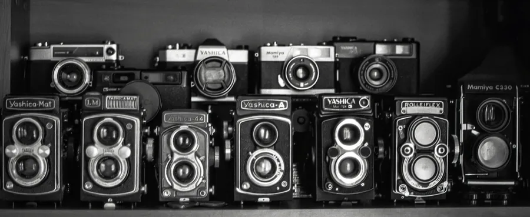
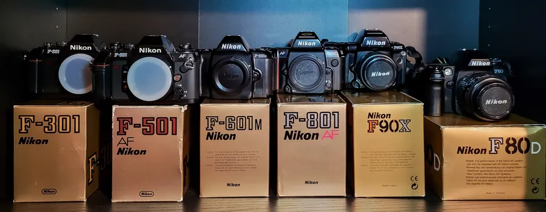
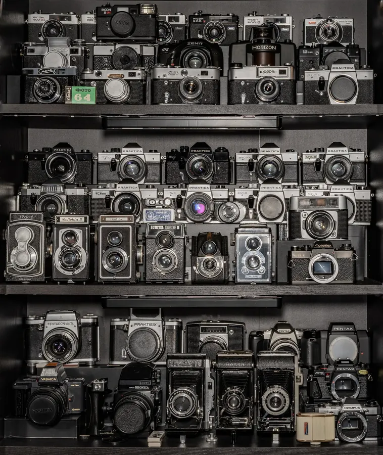
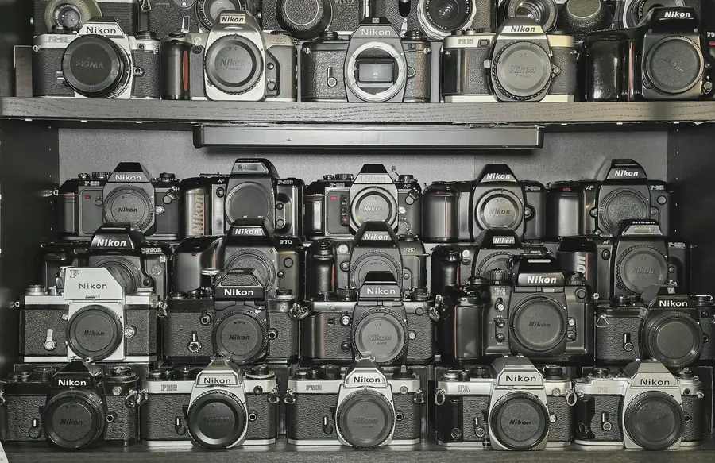

Kolekcja na przestrzeni lat
Zdjęcia witryny z kolekcją, od najstarszych do najnowszych.

Czerwiec 2015

Listopad 2016 – Praktica

Styczeń 2017 – Praktica

Styczeń 2019 – porządki w witrynie Praktica

Grudzień 2021

Wrzesień 2023

Listopad 2023

Styczeń 2026
